Intercorso · Lezione 3
Quantizzazione: SNR, legge dei 6 dB, Lloyd-Max e companding
Il quantizzatore uniforme e il suo SNR (legge dei 6 dB/bit), i suoi limiti, il quantizzatore ottimo di Lloyd-Max e il companding (leggi µ e A).
Indice della lezione
- Relazione ingresso-uscita del quantizzatore
- Codifica binaria
- Errore di quantizzazione
- Fattore di carico
- SNR di quantizzazione
- Progetto di un quantizzatore
- Limiti della quantizzazione uniforme
- Quantizzazione non uniforme
- Quantizzazione ottima: Lloyd-Max
- Limiti della quantizzazione ottima
- Analisi del companding
- Companding logaritmico
- Legge µ
- Legge A
- Prestazioni del companding logaritmico
- Spiegazioni e dimostrazioni passo-passo
- Domande da esame
Il corso, slide per slide
Relazione ingresso-uscita del quantizzatore
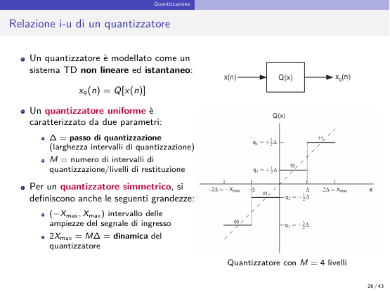
Il quantizzatore è un sistema TD non lineare e istantaneo: x_q(n)=Q[x(n)]. Il quantizzatore uniforme ha due parametri: \Delta = passo di quantizzazione (larghezza degli intervalli) e M = numero di intervalli/livelli di restituzione. Per un quantizzatore simmetrico: (-X_{max},X_{max}) è l'intervallo delle ampiezze d'ingresso e
(figura: quantizzatore con M=4 livelli).
Codifica binaria
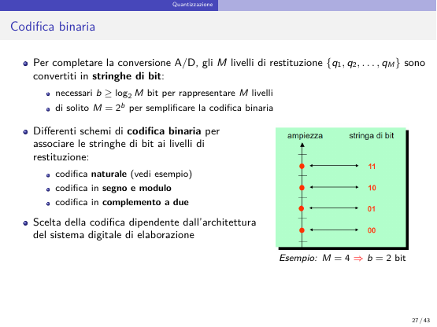
Gli M livelli \{q_1,\dots,q_M\} sono convertiti in stringhe di bit: servono b\ge\log_2M bit; di solito M=2^b per semplificare la codifica binaria. Schemi di codifica: naturale (esempio), in segno e modulo, in complemento a due; la scelta dipende dall'architettura del sistema di elaborazione. Esempio: M=4\Rightarrow b=2 bit.
Errore di quantizzazione
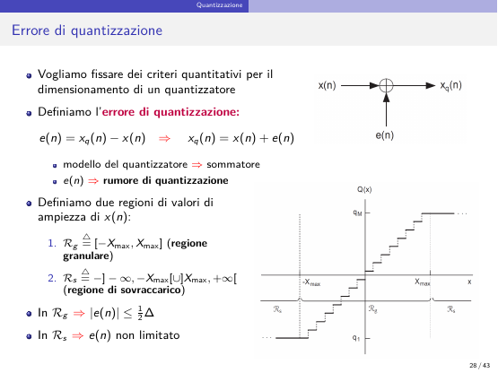
Per fissare criteri quantitativi di dimensionamento si definisce
Il quantizzatore si modella come un sommatore; e(n) è il rumore di quantizzazione. Due regioni di ampiezza di x(n):
- \mathcal R_g\triangleq[-X_{max},X_{max}] — regione granulare: \lvert e(n)\rvert\le\frac12\Delta;
- \mathcal R_s\triangleq\,]-\infty,-X_{max}[\,\cup\,]X_{max},+\infty[ — regione di sovraccarico: e(n) non limitato.
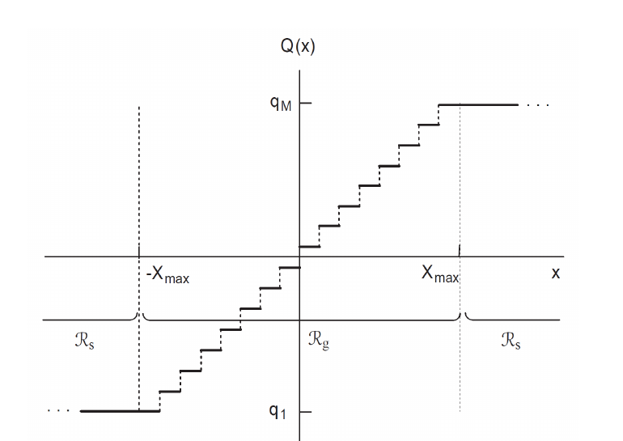
Fattore di carico
L'errore in sovraccarico è irreversibile: va evitato che il quantizzatore ci operi, aumentando X_{max}. Ma a parità di M, più X_{max} → più \Delta → più errore nella regione granulare. Ragionevole scegliere X_{max} proporzionale al livello del segnale: x_{rms}=\sqrt{P_x} (valore efficace). Fattore di carico:
Assimilando x(n) a una v.a. a media nulla e deviazione standard x_{rms}, dalla disuguaglianza di Chebyshev la probabilità di sovraccarico è
Con k_c=4 (four-sigma loading): P_s\le\frac1{16}=0.0625 (6.25%).
SNR di quantizzazione
Fissato X_{max} tramite k_c, si misura l'accuratezza nella regione granulare con l'SNR di quantizzazione:
\text{SNR}\gg1 ⇒ quantizzazione accurata; considera solo l'errore nella regione granulare. Modellando e(n)\sim U(-\Delta/2,\Delta/2): \langle e^2(n)\rangle\sim E[e^2(n)]=\Delta^2/12. «Con semplici passaggi algebrici»:
L'SNR migliora di 6 dB per ogni bit in più, cioè per ogni raddoppio del numero di livelli.
Progetto di un quantizzatore
Formule di progetto: P_s\le1/k_c^2 e \text{SNR}_{dB}=6.02\,b-[k_c]_{dB}+4.77. Al crescere di k_c: P_s e \text{SNR}_{dB} diminuiscono. Al crescere di M=2^b: \text{SNR}_{dB} aumenta (migliora la qualità) ma crescono costo e memoria.
Esempio 7.6: si vuole \text{SNR}_{dB}=85 dB con k_c=4: 85=6.02\,b-12.04+4.77\Rightarrow b=\frac{85+7.27}{6.02}=15.3\Rightarrow b=16 bit. Audio stereo a f_c=44.1 kHz: 16\times44.1 kHz =705.6 kbit/s per canale (L/R); 1 minuto di stereo =2\times60\times44\,100\times16=84\,672\,000 bit =10\,584\,000 byte =10\,584 kB \approx10.6 MB. Conversioni (ISO/IEC): 1 byte = 8 bit; 1 kB = 1000 byte; 1 MB = 1000 kB.
Limiti della quantizzazione uniforme
La quantizzazione uniforme è teoricamente ottima solo se x(n) è uniforme in (-X_{max},X_{max}). Il segnale vocale ha pdf non uniforme (valori vicini a zero più probabili), ben modellata da una distribuzione di Laplace:
Intuitivamente le ampiezze piccole vanno quantizzate più finemente ⇒ quantizzazione non uniforme.
Quantizzazione non uniforme
Dati M+1 livelli di decisione x_0<x_1<\dots<x_M, con x_0=-\infty, x_M=+\infty, si ha una partizione R_1,\dots,R_M dell'asse reale, R_i=(x_{i-1},x_i): intervalli esterni R_1=\,]-\infty,x_1], R_M=[x_{M-1},+\infty[; interni R_i per i=2,\dots,M-1. Assegnati gli M livelli di restituzione q_1,\dots,q_M, una legge arbitraria è
Regione granulare R_g=\bigcup_{i=2}^{M-1}R_i=(x_1,x_{M-1}); regione di sovraccarico R_s=R_1\cup R_M=\,]-\infty,x_1]\cup[x_{M-1},+\infty[.
Quantizzazione ottima: Lloyd-Max
Con e(n)=Q[x(n)]-x(n) e f_X(x) la pdf di x(n) (supposto stazionario del primo ordine), il valore quadratico medio dell'errore (MSE) è
Il quantizzatore ottimo secondo il criterio MMSE minimizza l'MSE rispetto a intervalli R_i (livelli di decisione x_1,\dots,x_{M-1}) e livelli q_1,\dots,q_M. Non esiste soluzione in forma chiusa, ma si trovano due condizioni necessarie fissando un sottoinsieme di variabili e ottimizzando l'altro:
- Fissati i livelli di decisione, i livelli di restituzione ottimi sono i centroidi: q_i=E[x(n)\mid x(n)\in R_i], i=1,\dots,M (media condizionale; risultato noto della stima ottima MMSE). (Si ottiene azzerando la derivata dell'MSE rispetto a q_i: 2\int_{R_i}(q_i-x)f_X\,dx=0.)
- Fissati i livelli di restituzione, i livelli di decisione sono i punti medi: x_i=\frac{q_i+q_{i+1}}2, i=1,\dots,M-1 (regola a minima distanza: x(n) è approssimato dal livello q_i più vicino).
Algoritmo di Lloyd-Max: si applicano alternativamente le due condizioni, iterando finché l'MSE non si assesta su un valore sufficientemente piccolo.
Limiti della quantizzazione ottima
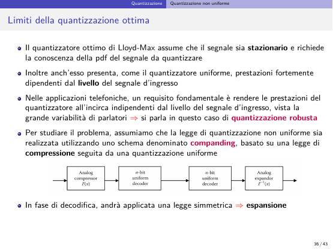
Lloyd-Max assume il segnale stazionario e richiede la conoscenza della pdf; come l'uniforme, ha prestazioni fortemente dipendenti dal livello d'ingresso. In telefonia serve che le prestazioni siano all'incirca indipendenti dal livello d'ingresso (grande variabilità dei parlatori): quantizzazione robusta. Si studia con lo schema del companding: legge di compressione seguita da quantizzazione uniforme; in decodifica si applica la legge simmetrica (espansione). (Nella figura il secondo blocco è etichettato «n-bit uniform decoder» come il terzo; dal testo dovrebbe essere l'encoder.)
Analisi del companding
MSE (approssimazione high resolution), valida se M\gg1, sovraccarico trascurato e pdf circa costante in ogni intervallo:
Con \Delta_i=\Delta (uniforme) si ritrova \text{MSE}=\Delta^2/12.
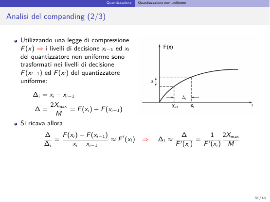
Legge di compressione F(x): i livelli x_{i-1},x_i del quantizzatore non uniforme sono trasformati in F(x_{i-1}),F(x_i) del quantizzatore uniforme, con \Delta=\frac{2X_{max}}M=F(x_i)-F(x_{i-1}). Quindi
Sostituendo nell'MSE e passando all'integrale (\Delta_i\to dx):
Con f_X(x)=0 fuori da (-X_{max},X_{max}), f_X pari e F dispari:
Companding logaritmico
Per rendere l'SNR indipendente dal livello basta scegliere \frac1{F'(x)}=kx, cioè
(c, k costanti arbitrarie). Imponendo F(X_{max})=X_{max}:
Con questa F l'integrale a denominatore diventa k^2\int_0^{X_{max}}x^2f_X\,dx, che si semplifica con il numeratore:
Per una pdf f_X arbitraria, la legge di compressione che rende l'SNR indipendente dal livello è di tipo logaritmico: corrisponde a un raddoppio di \Delta_i per ogni raddoppio del livello. Per x\to0 non è implementabile esattamente (F(x)\to-\infty): si usano approssimazioni che valgono zero in x=0.
Legge µ
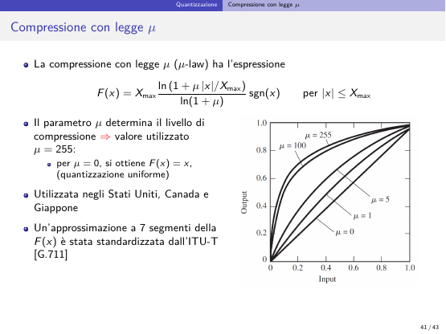
\mu determina il livello di compressione; valore usato \mu=255; per \mu=0 si ha F(x)=x (quantizzazione uniforme). Usata in USA, Canada, Giappone; una approssimazione a 7 segmenti è standardizzata ITU-T [G.711].
Legge A
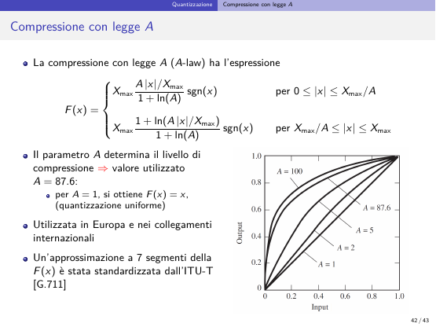
A determina la compressione; valore usato A=87.6; per A=1 si ha F(x)=x. Usata in Europa e nei collegamenti internazionali; approssimazione a 7 segmenti standardizzata ITU-T [G.711].
Prestazioni del companding logaritmico
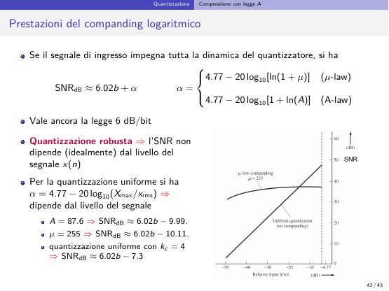
Se il segnale impegna tutta la dinamica del quantizzatore:
Vale ancora la legge dei 6 dB/bit; quantizzazione robusta: l'SNR non dipende (idealmente) dal livello di x(n). Per la quantizzazione uniforme \alpha=4.77-20\log_{10}(X_{max}/x_{rms}), che dipende dal livello. Numeri:
- A=87.6: 1+\ln87.6=5.47, \alpha=4.77-14.76\Rightarrow\text{SNR}_{dB}\approx6.02\,b-9.99;
- \mu=255: \ln256=5.55, \alpha=4.77-14.88\Rightarrow\text{SNR}_{dB}\approx6.02\,b-10.11;
- uniforme con k_c=4: \alpha=4.77-12.04\Rightarrow\text{SNR}_{dB}\approx6.02\,b-7.3.
Spiegazioni e dimostrazioni passo-passo
Apri una voce per leggere la spiegazione in parole semplici e le dimostrazioni svolte riga per riga (🧩 = passaggio ricostruito da me).
Quantizzazione uniforme, errore di quantizzazione e fattore di carico
Spiegazione
Codifica binaria
Per completare la A/D, gli M livelli \{q_1,\dots,q_M\} si convertono in stringhe di bit:
- servono b\ge\log_2M bit per rappresentare M livelli;
- di solito si sceglie M = 2^b per semplificare la codifica binaria.
Schemi di codifica binaria (associano stringhe di bit ai livelli):
- codifica naturale (vedi esempio);
- codifica in segno e modulo;
- codifica in complemento a due.
La scelta dipende dall'architettura del sistema digitale di elaborazione.
Esempio: M = 4 \Rightarrow b = 2 bit; codifica naturale dal livello più basso al più alto: 00, 01, 10, 11
Modello additivo
Obiettivo della slide: fissare criteri quantitativi per dimensionare un quantizzatore. Scrivere x_q = x+e trasforma il quantizzatore (non lineare) in un sommatore con un "rumore" e(n): il rumore di quantizzazione. È il modello che permette di parlare di SNR (snr di quantizzazione).
A destra: modello a sommatore x(n) + e(n) = x_q(n) e caratteristica Q(x) a gradini tra q_1 e q_M. Nella regione granulare \mathcal{R}_g = [-X_{max}, X_{max}] i gradini seguono la bisettrice; nelle regioni di sovraccarico \mathcal{R}_s l'uscita resta ferma a q_1 o q_M
Trade-off su X_{max}
- L'errore di quantizzazione è irreversibile, quindi bisogna evitare che il quantizzatore lavori nella regione di sovraccarico, e per questo si vorrebbe aumentare X_{max}.
- Ma a parità di M, aumentare X_{max} aumenta \Delta, e quindi l'errore nella regione granulare.
- È ragionevole scegliere X_{max} proporzionale al livello del segnale, misurato dal valore efficace x_{rms} = \sqrt{P_x}. Da qui la definizione del fattore di carico k_c = X_{max}/x_{rms}.
- Assimilando x(n) a una v.a. a media nulla e deviazione standard x_{rms}, la disuguaglianza di Chebyshev dà P_s\le1/k_c^2.
- Con k_c = 4 (four-sigma loading): P_s\le1/16 = 0.0625 (6.25%).
🎯 Esame: le due regioni, perché serve k_c, da dove viene il 6.25% del four-sigma loading.
Perché importa
È il secondo stadio della A/D (conversione ad da) e l'unico irreversibile. b fissa sia la qualità (SNR) sia il bit rate (b\cdot f_c).
Dimostrazioni passo-passo
Derivazione — |e(n)|\le\Delta/2 nella regione granulare
🧩 Derivazione mia In R_g ogni x(n) cade in un intervallo di larghezza \Delta e il livello di restituzione ne è il punto medio. La distanza massima tra un punto dell'intervallo e il suo punto medio è metà della larghezza: |e(n)| = |x_q(n)-x(n)| \le \Delta/2. In R_s il livello resta quello estremo (es. q_M = X_{max}-\Delta/2) mentre x(n) può crescere senza limite, quindi e(n) non è limitato.
Derivazione — b\ge\log_2M
Con b bit si scrivono 2^b stringhe distinte. Per dare un codice diverso a ciascuno degli M livelli serve 2^b\ge M, cioè b\ge\log_2M.
Derivazione — Probabilità di sovraccarico e four-sigma loading
Numeri: k_c = 4 → P_s\le 1/4^2 = 1/16 = 0.0625 (6.25%).
Esempio — Quantizzatore con M = 4
🧩 Derivazione mia (lettura della figura)
\begin{aligned} M &= 4 \Rightarrow \Delta = \frac{2X_{max}}{4} = \frac{X_{max}}{2} \Rightarrow X_{max} = 2\Delta && \text{dinamica} \\ \text{soglie} &: -\Delta,\ 0,\ +\Delta \quad (\text{più } \pm X_{max} = \pm 2\Delta \text{ come bordi di } R_g) \\ \text{livelli} &: q_1 = -\tfrac32\Delta,\ q_2 = -\tfrac12\Delta,\ q_3 = +\tfrac12\Delta,\ q_4 = +\tfrac32\Delta && \text{punti medi} \\ b &= \log_2 4 = 2\ \text{bit} && \text{codifica naturale: } 00, 01, 10, 11 \end{aligned}Nessun livello cade in zero: con M pari e livelli ai punti medi, lo zero è una soglia di decisione, non un livello.
SNR di quantizzazione e legge dei 6 dB/bit
Spiegazione
- Legge dei 6 dB/bit: l'SNR migliora di 6 dB per ogni bit in più, cioè ogni raddoppio del numero di livelli.
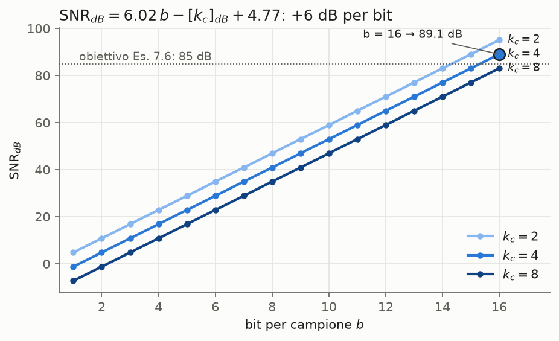
🧩 Grafico mio della formula. Rette parallele di pendenza 6.02 dB/bit; raddoppiare k_c trasla la retta verso il basso di 20\log_{10}2 = 6.02 dB, cioè costa esattamente un bit. Il punto evidenziato è l'Esempio 7.6: con k_c = 4 il primo b che supera 85 dB è 16 (89.1 dB).
- Trade-off di progetto:
- k_c ↑ ⇒ P_s ↓ (meno sovraccarico) ma \text{SNR}_{dB} ↓ (più rumore granulare);
- M = 2^b ↑ ⇒ \text{SNR}_{dB} ↑ (qualità) ma anche costo e memoria ↑.
- Dipendenza dal livello del segnale: a X_{max} fisso, l'SNR dipende da x_{rms} tramite k_c. Un segnale debole (es. un parlatore a bassa voce) ha k_c grande e SNR basso. Da qui nasce il companding.
Esempio 7.6
📄 Svolgimento completo in dimensionamento quantizzatore
- Si vuole \text{SNR}_{dB} = 85 dB con k_c = 4: servono b = 16 bit (quantizzatore a 16 bit).
- Un segnale audio stereo campionato a f_c = 44.1 kHz e quantizzato così produce un flusso di 16\times44.1\,\text{kHz} = 705.6 kbit/s per canale (L/R).
- 1 minuto di audio stereo: 2\times60\times44\,100\times16 = 84\,672\,000 bit = 10\,584\,000 byte = 10\,584 kB \approx 10.6 MB.
- Fattori di conversione (ISO/IEC): 1 byte = 8 bit; 1 kB = 1000 byte; 1 MB = 1000 kB.
🎯 Esame: derivare la legge dei 6 dB/bit dall'inizio (è l'unico passaggio che le slide omettono esplicitamente) ed elencarne le ipotesi.
Perché importa
Collega qualità (SNR), numero di bit e quindi bit rate (R_b = b\,f_c). È il primo esempio del corso di un compromesso tra qualità e risorse.
Dimostrazioni passo-passo
Derivazione — Potenza del rumore di quantizzazione \Delta^2/12
Si parte da: varianza dell'uniforme (variabili aleatorie notevoli): \mathcal{U}(a,b)\Rightarrow\text{Var} = (b-a)^2/12
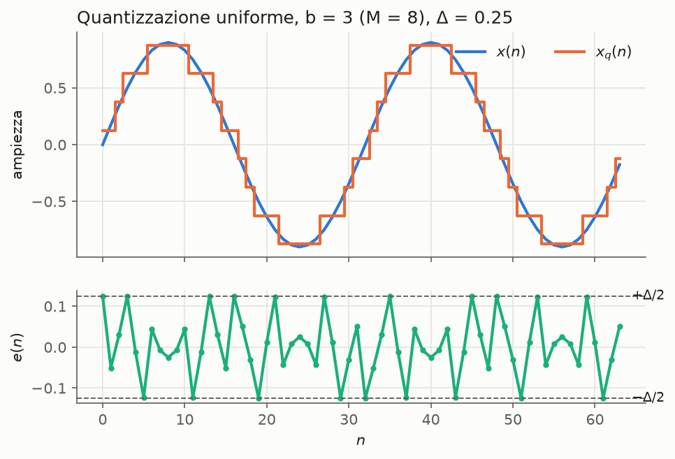
🧩 Grafico mio: sinusoide di ampiezza 0.9 quantizzata con b = 3 bit (M = 8, X_{max} = 1, \Delta = 0.25). L'errore e(n) resta sempre in [-\Delta/2, +\Delta/2] (regione granulare) e salta in modo irregolare dentro questa fascia. Per questo è ragionevole modellarlo come v.a. uniforme su (-\Delta/2, \Delta/2), cioè il modello da cui viene \Delta^2/12.
Derivazione — Legge dei 6 dB/bit
Si parte da: \text{SNR} = P_x/P_e, P_e = \Delta^2/12, \Delta = 2X_{max}/M (quantizzazione uniforme), k_c = X_{max}/x_{rms}, P_x = x_{rms}^2
- errore uniforme su (-\Delta/2,\Delta/2), ragionevole se M\gg1 e il segnale "attraversa" molti livelli;
- niente sovraccarico (conta solo la regione granulare);
- quantizzatore uniforme simmetrico. Se cade la 2, l'SNR reale è peggiore perché si aggiunge l'errore di sovraccarico, non limitato.
Derivazione — Costante per il four-sigma loading
🧩 Derivazione mia
k_c = 4 \Rightarrow [k_c]_{dB} = 20\log_{10}4 = 12.04\,\text{dB} \Rightarrow \text{SNR}_{dB} = 6.02b - 12.04 + 4.77 = 6.02b - 7.27 \approx 6.02b - 7.3
Quantizzazione non uniforme e quantizzatore ottimo di Lloyd-Max
Spiegazione
Perché non uniforme
- Dal punto di vista teorico la quantizzazione uniforme è ottima solo se x(n) è distribuito uniformemente in (-X_{max},X_{max}).
- Il segnale vocale ha una pdf non uniforme: i valori vicini allo zero sono più probabili di quelli elevati.
- Questo comportamento è ben modellato da una distribuzione di Laplace, f_X(x) = \frac\lambda2e^{-\lambda|x|} con \lambda>0.
- Intuitivamente, le ampiezze più piccole vanno quantizzate più finemente: da qui la quantizzazione non uniforme.
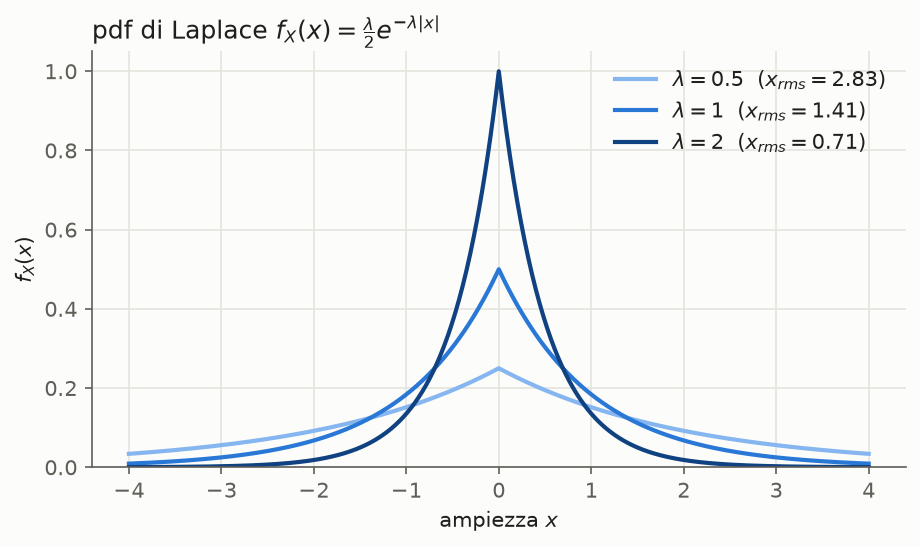
🧩 Grafico mio. La pdf di Laplace ha una cuspide in 0 e code esponenziali. \lambda regola la larghezza: il picco vale \lambda/2 e il valore efficace è x_{rms} = \sqrt2/\lambda (derivazione in variabili aleatorie notevoli). Un parlatore a voce alta ha \lambda piccolo (curva larga), uno a voce bassa ha \lambda grande (curva stretta).
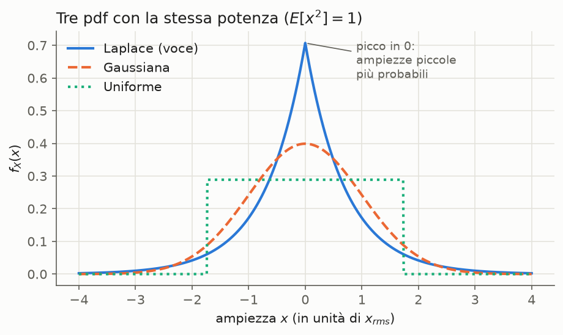
🧩 Grafico mio: tre pdf con la stessa potenza E[x^2] = 1. Rispetto a gaussiana e uniforme, la Laplace concentra molta più probabilità vicino a zero e ha code più lunghe. Un quantizzatore uniforme, che spende gli stessi livelli ovunque, "spreca" risoluzione sulle ampiezze grandi (rare) e ne dà poca a quelle piccole (frequenti). È ottimo solo per la pdf uniforme (verde).
Algoritmo di Lloyd-Max
- Errore di quantizzazione: e(n) \triangleq x_q(n) - x(n) = Q[x(n)] - x(n), con f_X(x) pdf del segnale x(n) supposto stazionario del primo ordine. Il suo valor quadratico medio (mean square error, MSE) è la funzione da minimizzare.
- Trovare la legge ottima secondo il criterio a minimo errore quadratico medio (MMSE) significa determinare gli intervalli R_1,\dots,R_M (cioè i livelli di decisione x_1,\dots,x_{M-1}) e i livelli di restituzione q_1,\dots,q_M che minimizzano l'MSE.
- Il problema non ha soluzione in forma chiusa. Si ricavano però facilmente due condizioni necessarie, fissando un sottoinsieme delle variabili e ottimizzando rispetto all'altro: è il quantizzatore ottimo di Lloyd-Max.
- Regioni fissate: i livelli ottimi sono i centroidi delle regioni di decisione (centroide = media condizionale; risultato ben noto dalla teoria della stima ottima MMSE).
- Livelli fissati: le soglie sono i punti medi tra livelli adiacenti, cioè x(n) viene approssimato con il livello q_i più vicino (regola a minima distanza).
- L'algoritmo applica alternativamente le due condizioni e itera finché l'MSE si assesta su un valore sufficientemente piccolo → algoritmo lloyd max.
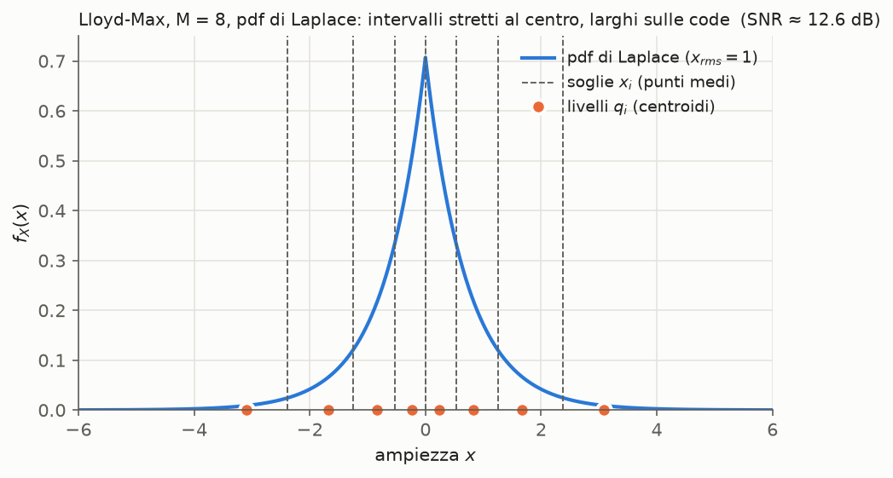
🧩 Grafico mio: risultato dell'algoritmo di Lloyd-Max per M = 8 e pdf di Laplace con x_{rms} = 1. Livelli q_i = \pm0.233, \pm0.833, \pm1.672, \pm3.087; soglie x_i = 0, \pm0.533, \pm1.253, \pm2.380; MSE = 0.0545, quindi SNR = 10\log_{10}(1/0.0545) \approx 12.6 dB. Si vede l'idea della slide: intervalli stretti dove la pdf è alta, larghi sulle code. Ogni soglia sta a metà fra due livelli; ogni livello è il baricentro della pdf nel suo intervallo, quindi è spostato verso lo zero rispetto al centro dell'intervallo.
Limiti del quantizzatore ottimo
- richiede segnale stazionario e pdf nota;
- come l'uniforme, ha prestazioni fortemente dipendenti dal livello del segnale.
In telefonia serve una quantizzazione robusta, con prestazioni circa indipendenti dal livello, vista la grande variabilità dei parlatori. La soluzione è il companding: compressione, poi quantizzazione uniforme, e in decodifica espansione.
L'idea del companding è non progettare più soglie e livelli uno per uno. Si sceglie una legge di compressione F e si quantizza uniformemente il segnale compresso F(x). Quantizzare uniformemente F(x) equivale a quantizzare in modo non uniforme x: le soglie sull'asse x sono x_i = F^{-1}(y_i), dove y_i sono le soglie equidistanti del quantizzatore uniforme. Così tutto il progetto si sposta sulla scelta di F → companding (sezione «Idea chiave del companding»).
🎯 Esame: derivare le due condizioni (centroide, punto medio), dire perché sono solo necessarie, spiegare i limiti che portano al companding.
Perché importa
Mostra che il quantizzatore va progettato sulla statistica della sorgente: con la stessa M, mettere intervalli più stretti dove la pdf è più alta riduce l'MSE. Le sue limitazioni motivano il companding.
Dimostrazioni passo-passo
Derivazione — Condizione del centroide
🧩 Derivazione mia. Fisso le regioni R_i e ottimizzo rispetto a q_i, che compare solo nel termine i-esimo.
\begin{aligned} \frac{\partial\,\text{MSE}}{\partial q_i} &= \int_{R_i} 2(q_i-x)f_X(x)\,dx = 0 && \text{derivo sotto il segno di integrale} \\ q_i\int_{R_i}f_X(x)\,dx &= \int_{R_i}x\,f_X(x)\,dx && \text{separo} \\ q_i &= \frac{\int_{R_i}x\,f_X(x)\,dx}{\int_{R_i}f_X(x)\,dx} = \int_{R_i} x\,\frac{f_X(x)}{P(x\in R_i)}\,dx && \text{pdf condizionata a } \{x\in R_i\} \\ &= E[x(n)\,|\,x(n)\in R_i] && \text{media condizionale} \end{aligned}È un minimo: \partial^2\text{MSE}/\partial q_i^2 = 2P(x\in R_i)>0. Interpretazione: q_i è il baricentro della porzione di pdf in R_i.
Derivazione — Condizione del punto medio
🧩 Derivazione mia. Fisso i q_i; x_i è l'estremo superiore di R_i e quello inferiore di R_{i+1}.
\begin{aligned} \text{MSE} &\ni \int_{x_{i-1}}^{x_i}(q_i-x)^2f_X\,dx + \int_{x_i}^{x_{i+1}}(q_{i+1}-x)^2f_X\,dx && \text{termini che dipendono da } x_i \\ \frac{\partial\,\text{MSE}}{\partial x_i} &= (q_i-x_i)^2f_X(x_i) - (q_{i+1}-x_i)^2f_X(x_i) = 0 && \text{regola di Leibniz} \\ (x_i-q_i)^2 &= (q_{i+1}-x_i)^2 && f_X(x_i)>0 \\ x_i - q_i &= q_{i+1}-x_i && q_i<x_i<q_{i+1} \Rightarrow \text{entrambi positivi} \\ x_i &= \frac{q_i+q_{i+1}}{2} \end{aligned}Interpretazione: ogni x va al livello q_i più vicino (regola a minima distanza).
Caso uniforme come verifica
🧩 Sanity check mio: con f_X uniforme su (-X_{max},X_{max}) e intervalli uguali, il centroide di ogni R_i è il punto medio e le soglie sono a metà tra livelli adiacenti. Il quantizzatore uniforme soddisfa quindi entrambe le condizioni ed è ottimo, in accordo con.
Companding e quantizzazione robusta (legge logaritmica, µ-law, A-law)
Spiegazione
Confronto delle prestazioni
| Quantizzatore | \text{SNR}_{dB} | Dipende dal livello? |
|---|---|---|
| A-law, A=87.6 | 6.02b-9.99 | no (idealmente) |
| µ-law, \mu=255 | 6.02b-10.11 | no (idealmente) |
| Uniforme, k_c=4 | 6.02b-7.3 | sì, tramite k_c = X_{max}/x_{rms} |
La legge dei 6 dB/bit vale ancora. A pieno carico il companding perde circa 3 dB rispetto all'uniforme con k_c=4, ma mantiene l'SNR quando il segnale si abbassa, mentre l'uniforme perde 6 dB per ogni dimezzamento di x_{rms}.
🧩 Derivazione mia (il confronto quantitativo): -7.3-(-9.99)\approx2.7 dB e -7.3-(-10.11)\approx2.8 dB. Con un segnale 20 dB sotto il four-sigma loading (k_c = 40), l'uniforme dà 6.02b + 4.77 - 32.04 = 6.02b - 27.3 dB: 17 dB peggio del compander.
SNR (dB) in funzione del livello relativo d'ingresso (dB, da −50 a 0) —. La curva µ-law (\mu = 255) è quasi piatta su un ampio intervallo di livelli e cala solo per livelli molto bassi. La retta della quantizzazione uniforme (senza companding) cresce di 1 dB per ogni dB di livello, supera la µ-law solo vicino al fondo scala e le resta nettamente sotto per segnali deboli. La tacca a −4.77 dB sull'asse orizzontale segna l'estremo destro del grafico.
🧩 Lettura mia della figura: la pendenza unitaria della retta uniforme discende da \text{SNR}_{dB} = 6.02b + 4.77 - 20\log_{10}(X_{max}/x_{rms}). Ogni dB in più di x_{rms} riduce [k_c]_{dB} di 1 dB.
Grafico SNR in funzione del livello, anche per la legge A
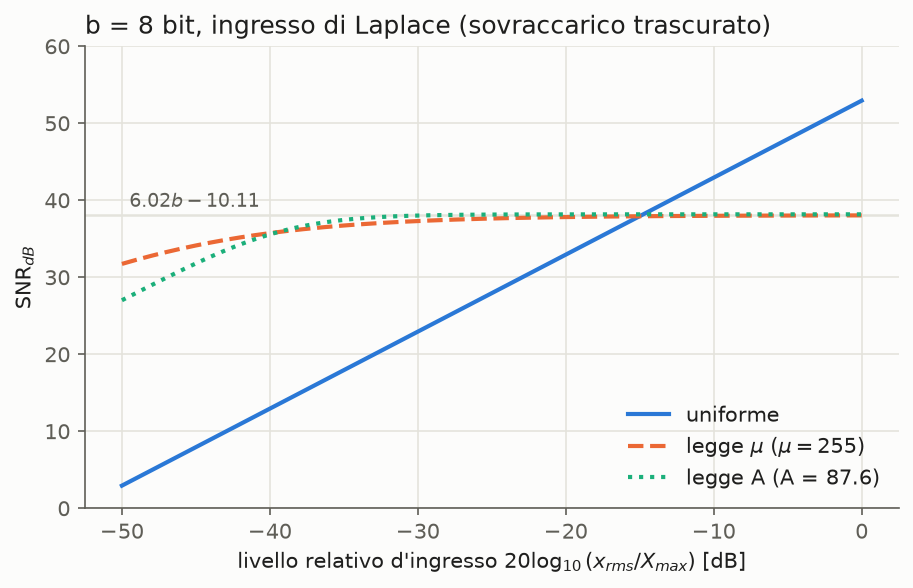
🧩 Grafico mio. Ricostruisce il grafico con le formule della slide, e aggiunge la legge A. Parametri: b = 8, ingresso di Laplace con x_{rms} variabile, sovraccarico trascurato. Le curve µ e A si assestano proprio su 6.02b + \alpha: 48.2 - 10.11 = 38.0 dB e 48.2 - 9.99 = 38.2 dB. Tra −40 e 0 dB restano entro circa 2.5 dB da quel valore (quantizzazione robusta), mentre la retta uniforme perde 1 dB per ogni dB di livello. L'uniforme è migliore solo sopra circa −15 dB. Con k_c = 4, cioè livello -12 dB, vale 48.2 - 7.3 = 40.9 dB, in accordo con il valore. La legge A cala prima della µ a livelli molto bassi: sotto X_{max}/A lavora nel tratto lineare, che equivale a un quantizzatore uniforme.
🧩 Derivazione mia delle curve (formula integrale, \text{MSE} = \frac{X_{max}^2}{3M^2}E\big[1/F'(x)^2\big], ingresso di Laplace con \lambda = \sqrt2/x_{rms}, E|x| = x_{rms}/\sqrt2):
\begin{aligned} \text{uniforme: } F' = 1 &\Rightarrow \text{SNR} = 3M^2\,x_{rms}^2/X_{max}^2 \\ \mu\text{-law: } \frac{1}{F'(x)} = \frac{\ln(1+\mu)}{\mu}\Big(1+\frac{\mu|x|}{X_{max}}\Big) &\Rightarrow E\Big[\frac{1}{F'^2}\Big] = \frac{\ln^2(1+\mu)}{\mu^2}\Big(1 + \frac{2\mu E|x|}{X_{max}} + \frac{\mu^2x_{rms}^2}{X_{max}^2}\Big) \\ A\text{-law: } \frac{1}{F'(x)^2} = (1+\ln A)^2\cdot\begin{cases}1/A^2 & |x|<X_{max}/A\\ x^2/X_{max}^2 & \text{altrimenti}\end{cases} &\Rightarrow E\Big[\frac{1}{F'^2}\Big] = (1+\ln A)^2\Big[\frac{1-e^{-\lambda a}}{A^2} + \frac{e^{-\lambda a}(a^2+2a/\lambda+2/\lambda^2)}{X_{max}^2}\Big],\ a = \frac{X_{max}}{A} \end{aligned}Per \mu|x|\gg X_{max} il termine dominante della µ-law è \mu^2x_{rms}^2/X_{max}^2: si ritrova \text{SNR} = 3M^2/\ln^2(1+\mu), cioè il valore costante della slide.
Curve delle leggi µ e A
F(x) normalizzata (output vs input in [0,1]) per \mu = 0, 1, 5, 100, 255 —. Con \mu = 0 è la bisettrice (uniforme); al crescere di \mu la curva è sempre più ripida vicino a 0, cioè comprime di più.
F(x) normalizzata per A = 1, 2, 5, 87.6, 100 —. Con A = 1 è la bisettrice (uniforme); al crescere di A la compressione aumenta.
🎯 Esame: derivare la legge logaritmica dalla richiesta "SNR indipendente da f_X"; spiegare perché serve µ/A-law; confrontare gli SNR; sapere µ=255 (USA, Canada, Giappone) e A=87.6 (Europa, collegamenti internazionali), entrambe nella g711.
Perché importa
Risolve il problema della quantizzazione robusta posto dalle applicazioni telefoniche. Le approssimazioni a 7 segmenti delle leggi µ e A sono standardizzate dall'ITU-T in g711.
🎯 Esame: spiegare perché compressione + quantizzazione uniforme + espansione equivale a un quantizzatore non uniforme su x, perché il progetto si riduce alla scelta di F, e con quale criterio la si sceglie.
Dimostrazioni passo-passo
Derivazione — MSE ad alta risoluzione
🧩 Derivazione mia del termine \Delta_i^2/12
\begin{aligned} \text{MSE} &= \sum_i\int_{R_i}(q_i-x)^2f_X(x)\,dx && quantizzazione non uniforme \\ &\approx \sum_i f_X(x_i)\int_{-\Delta_i/2}^{\Delta_i/2}u^2\,du && f_X \approx \text{cost. in } R_i;\ q_i \text{ al centro};\ u = x-q_i \\ &= \sum_i f_X(x_i)\frac{\Delta_i^3}{12} && \textstyle\int_{-a}^{a}u^2du = 2a^3/3,\ a=\Delta_i/2 \\ &= \frac{1}{12}\sum_i p_i\Delta_i^2 && p_i\approx f_X(x_i)\Delta_i \end{aligned}Ipotesi (high resolution): M\gg1; sovraccarico trascurato; f_X circa costante in ogni intervallo; q_i circa al centro di R_i (ipotesi implicita, 🧩 esplicitata da me). Sanity check: con \Delta_i = \Delta si ha \text{MSE} = \frac{\Delta^2}{12}\sum_ip_i = \frac{\Delta^2}{12}, come in snr di quantizzazione.
Derivazione — \Delta_i \approx \Delta/F'(x_i)
Dove F' è grande (compressione "ripida") gli intervalli originali sono stretti.
🧩 Lettura mia: è la forma quantitativa dell'«Idea chiave del companding» (in questa pagina). Intervalli uguali (\Delta) sull'asse compresso corrispondono a intervalli diversi (\Delta_i) sull'asse x, e il fattore di conversione è la pendenza locale F'(x_i). Il segno \approx viene solo dal rapporto incrementale sostituito con la derivata: le soglie x_i = F^{-1}(y_i) sono esatte.
Legge di compressione F(x) concava: l'intervallo \Delta_i = x_i - x_{i-1} sull'asse x viene mappato in un intervallo di ampiezza \Delta sull'asse F(x). Dove la curva è ripida, un \Delta_i piccolo basta a coprire un \Delta intero.
Derivazione — MSE e SNR in forma integrale
Derivazione — Legge logaritmica ottima per la robustezza
Idea: l'SNR è indipendente da f_X se il denominatore è proporzionale al numeratore, cioè se 1/[F'(x)]^2\propto x^2.
Derivazione — Costante \alpha per µ-law
🧩 Derivazione mia (ricondotta alla legge logaritmica per \mu|x|/X_{max}\gg1)
\begin{aligned} F(x) &= \frac{X_{max}}{\ln(1+\mu)}\ln\left(1+\frac{\mu x}{X_{max}}\right) && x>0 \\ &\approx \frac{X_{max}}{\ln(1+\mu)}\left[\ln\frac{\mu}{X_{max}} + \ln x\right] && 1+\mu x/X_{max}\approx\mu x/X_{max} \\ \Rightarrow \frac1k &= \frac{X_{max}}{\ln(1+\mu)} \Rightarrow kX_{max} = \ln(1+\mu) && \text{confronto con } c+\tfrac1k\ln x \\ \text{SNR} &= \frac{3M^2}{(kX_{max})^2} = \frac{3\cdot2^{2b}}{\ln^2(1+\mu)} && \text{SNR logaritmico} \\ \text{SNR}_{dB} &= 6.02\,b + 4.77 - 20\log_{10}\ln(1+\mu) && \text{come per i 6 dB/bit} \end{aligned}Numeri: \mu = 255: \ln256 = 5.545; 20\log_{10}5.545 = 14.88 dB; \alpha = 4.77-14.88 = -10.11 dB ✓. Termine trascurato: esattamente 1/F'(x) = \frac{\ln(1+\mu)}{X_{max}}\left(x + \frac{X_{max}}{\mu}\right). L'approssimazione trascura X_{max}/\mu rispetto a |x|, quindi vale per |x|\gg X_{max}/255; per segnali molto deboli l'SNR peggiora.
Derivazione — Costante \alpha per A-law
🧩 Derivazione mia
\begin{aligned} F(x) &= \frac{X_{max}}{1+\ln A}\left[1+\ln A+\ln\frac{x}{X_{max}}\right] && \text{ramo logaritmico, } x\ge X_{max}/A \\ \Rightarrow \frac1k &= \frac{X_{max}}{1+\ln A} \Rightarrow kX_{max} = 1+\ln A && \text{coefficiente di } \ln x \\ \text{SNR}_{dB} &= 6.02\,b+4.77-20\log_{10}(1+\ln A) \end{aligned}Numeri: A = 87.6: \ln87.6 = 4.473; 1+\ln A = 5.473; 20\log_{10}5.473 = 14.76 dB; \alpha = 4.77-14.76 = -9.99 dB ✓. Qui il ramo logaritmico è esatto (non approssimato) per |x|\ge X_{max}/A. Sotto quella soglia la legge è lineare, cioè equivale a una quantizzazione uniforme.
Derivazione — Controlli sulle leggi µ e A
🧩 Sanity check miei
- F(X_{max}) = X_{max} per entrambe: \ln(1+\mu)/\ln(1+\mu) = 1 e (1+\ln A)/(1+\ln A) = 1 ✓.
- A-law continua in |x| = X_{max}/A: entrambi i rami valgono X_{max}/(1+\ln A) ✓.
- µ-law con \mu\to0: \ln(1+\mu a)/\ln(1+\mu)\to\mu a/\mu = a, quindi F(x) = x ✓.
- A-law con A = 1: la soglia X_{max}/A = X_{max} copre tutto il range, e F(x) = X_{max}\cdot\frac{|x|/X_{max}}{1}\text{sgn}(x) = x ✓.
Derivazione — Esempio µ-law, soglie e livelli equivalenti
🧩 Derivazione mia: rende numerica l'«Idea chiave del companding» (in questa pagina). Lavoro sul semiasse 0\le x\le X_{max}; il semiasse negativo è simmetrico perché F è dispari.
Passo 1 — inversa della µ-law (è l'espansore, e serve per calcolare le soglie):
Passo 2 — soglie equivalenti. Le soglie uniformi positive sull'asse y sono y_j = j\Delta, j = 0,\dots,M/2, con \Delta = 2X_{max}/M. Con M pari lo zero è una soglia (come nell'esempio M = 4 di quantizzazione uniforme).
Passo 3 — ampiezze degli intervalli.
Passo 4 — numeri con \mu = 255 e M = 8 (b = 3 bit).
- 1+\mu = 256, quindi (1+\mu)^{2/M} = 256^{1/4} = 4 e x_j = \frac{4^j-1}{255}X_{max}.
- Il quantizzatore uniforme con lo stesso M ha \Delta = 2X_{max}/8 = 0.25\,X_{max}.
- I livelli vengono dal passo 1 con y = (j-\tfrac12)\Delta, cioè il centro dell'intervallo uniforme j: q_j = \frac{X_{max}}{255}\big[256^{(2j-1)/8}-1\big] = \frac{2^{2j-1}-1}{255}X_{max}, perché 256^{1/8} = 2.
| j | soglia uniforme y_j = j\Delta | soglia su x: x_j | ampiezza \Delta_j | \Delta_j/\Delta | livello q_j |
|---|---|---|---|---|---|
| 1 | 0.25\,X_{max} | 3/255 = 0.0118\,X_{max} | 0.0118\,X_{max} | 0.047 (21 volte più stretto) | 1/255 = 0.0039\,X_{max} |
| 2 | 0.50\,X_{max} | 15/255 = 0.0588\,X_{max} | 0.0471\,X_{max} | 0.188 | 7/255 = 0.0275\,X_{max} |
| 3 | 0.75\,X_{max} | 63/255 = 0.2471\,X_{max} | 0.1882\,X_{max} | 0.753 | 31/255 = 0.1216\,X_{max} |
| 4 | 1.00\,X_{max} | 255/255 = X_{max} | 0.7529\,X_{max} | 3.01 (3 volte più largo) | 127/255 = 0.4980\,X_{max} |
Lettura: quattro intervalli uguali sull'asse compresso diventano quattro intervalli diversi sull'asse x, ognuno 4 volte il precedente. Sotto X_{max}/4 il companding mette tre soglie (0.0118, 0.0588 e 0.2471\,X_{max}), mentre l'uniforme non ne ha nessuna oltre allo zero. Sopra 0.2471\,X_{max} c'è un solo intervallo, restituito col livello 0.498\,X_{max}.
Verifiche:
- Estremi: x_0 = 0 e x_{M/2} = \frac{X_{max}}{\mu}\big[(1+\mu)-1\big] = X_{max}. Le soglie coprono esattamente [0, X_{max}] ✓.
- Somma delle ampiezze: (3+12+48+192)/255 = 255/255 = 1, cioè X_{max} ✓.
- Caso limite \mu\to0: per Taylor (1+\mu)^{2j/M}\approx1+\frac{2j}{M}\mu, quindi x_j\approx\frac{X_{max}}{\mu}\cdot\frac{2j}{M}\mu = j\Delta. Si ritrova il quantizzatore uniforme, coerente con F(x) = x per \mu = 0 ✓.
- Livelli: q_4 = 0.498\,X_{max} non sta al centro di R_4 = (0.247, 1)\,X_{max}, che è 0.624\,X_{max}. F^{-1} non è lineare e sposta verso lo zero il centro dell'intervallo uniforme. Con M = 8 non siamo ad alta risoluzione. Al crescere di M, F è quasi lineare dentro ogni intervallo e q_i torna circa al centro, come assume.
Passo 5 — esatto contro alta risoluzione. Derivata della µ-law:
| b | M | (1+\mu)^{2/M} | più stretto / \Delta (esatto) | più largo / \Delta (esatto) |
|---|---|---|---|---|
| 3 | 8 | 4 | 1/21.3 | 3.01 |
| 4 | 16 | 2 | 1/31.9 | 4.02 |
| 8 | 256 | 1.044 | 1/45.0 | 5.45 |
| \to\infty | \to\infty | \to1 | \to 1/F'(0) = 1/46.0 | \to 1/F'(X_{max}) = 5.57 |
Le soglie x_j = F^{-1}(j\Delta) sono esatte per ogni M. La formula \Delta_i\approx\Delta/F'(x_i) invece diventa accurata solo per M grande: con b = 8 sbaglia già solo del 2% circa.
Collegamento con. Con M = 16 il rapporto è esattamente 2: ogni intervallo è il doppio del precedente, e le soglie x_j = \frac{2^j-1}{255}X_{max} quasi raddoppiano a ogni passo. È il comportamento della legge logaritmica descritto: l'intervallo raddoppia quando raddoppia il livello. In generale, dal passo 2 si ha \frac{X_{max}}{\mu}(1+\mu)^{2(j-1)/M} = x_{j-1}+\frac{X_{max}}{\mu}, e sostituendo nel passo 3:
Ipotesi: F = µ-law (strettamente crescente e dispari); quantizzatore uniforme simmetrico con M pari e livelli al centro degli intervalli; nessun sovraccarico (|x|\le X_{max}).
Esercizio svolto · Dimensionamento di un quantizzatore e bit rate
Metodo
- Fissare k_c in base alla probabilità di sovraccarico ammessa: P_s\le1/k_c^2, cioè k_c\ge1/\sqrt{P_s} (disuguaglianza di chebyshev). Default: k_c = 4 (four-sigma loading).
- Calcolare [k_c]_{dB} = 20\log_{10}k_c (rapporto di ampiezze, quindi 20\log).
- Invertire la legge dei 6 dB/bit (snr di quantizzazione):
b\ge\frac{\text{SNR}_{dB}+[k_c]_{dB}-4.77}{6.02}e arrotondare per eccesso all'intero.
- Verificare: ricalcolare l'SNR con il b scelto, e anche con b-1 per controllare che non basti.
- Bit rate: R_b = b\cdot f_c per canale; per n_{ch} canali, R_{tot} = n_{ch}\,b\,f_c.
- Memoria: bit = R_{tot}\cdot T; poi byte (÷8), kB (÷1000), MB (÷1000) secondo ISO/IEC.
- Con companding: \text{SNR}_{dB}\approx6.02b+\alpha, con \alpha = -9.99 (A-law) o -10.11 (µ-law) (companding).
Formule usate
- \Delta = 2X_{max}/M, M = 2^b — quantizzazione uniforme
- P_s\le1/k_c^2 — disuguaglianza di chebyshev
- \text{SNR}_{dB} = 6.02b-[k_c]_{dB}+4.77 — snr di quantizzazione
- \text{SNR}_{dB}\approx6.02b+\alpha — companding
Casi svolti
Caso 1 — Four-sigma loading
Traccia: k_c = 4. Probabilità di sovraccarico massima?
Caso 2 — Esempio 7.6: quantizzatore audio a 85 dB
Traccia: si vuole \text{SNR}_{dB} = 85 dB con k_c = 4. Quanti bit? Bit rate per audio stereo a f_c = 44.1 kHz? Memoria per 1 minuto?
Dati: \text{SNR}_{dB} = 85 dB, k_c = 4, f_c = 44.1 kHz, 2 canali, T = 60 s.
Passo 1 — numero di bit (la slide dà solo «b = 16»):
- b = 16: 6.02\times16-7.27 = 96.32-7.27 = 89.05 dB ≥ 85 ✓;
- b = 15: 90.30-7.27 = 83.03 dB < 85 ✗.
Passo 2 — bit rate per canale:
Passo 3 — memoria per 1 minuto stereo:
Caso 3 — Costanti \alpha del companding
Traccia: verificare \alpha = -9.99 dB (A-law, A=87.6), -10.11 dB (µ-law, \mu=255), -7.3 dB (uniforme, k_c=4).
Trappole
- [k_c]_{dB} usa 20\log_{10}, non 10\log_{10}: k_c è un rapporto di ampiezze.
- Arrotondare b per eccesso: 15.33 → 16, non 15.
- La legge dei 6 dB/bit ignora il sovraccarico: se k_c è piccolo, l'SNR reale è peggiore.
- Stereo = 2 canali; «per canale» vs «totale».
- Unità di memoria: le slide usano i fattori ISO/IEC decimali (1 kB = 1000 byte), non 1024.
- Le costanti \alpha del companding valgono con il segnale che impegna tutta la dinamica.
Domande da esame
- Ricavare la legge dei 6 dB/bit. Dimensionare un quantizzatore per un SNR dato.
- Condizioni di Lloyd-Max: derivazione e significato.
- Perché serve la quantizzazione robusta? Derivare la legge logaritmica. µ-law vs A-law.